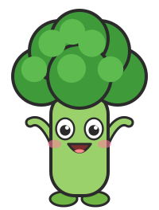

Broccoli Cheese Bites

From Episode 1: Broccoli Bob learns he already has a superpower. These little “tiny trees” are golden outside and soft inside.
- 🥕 3 ingredients
- ⏱️ Prep: 10 min
- 🔥 Cook: 18 min
- 🍽️ Makes: about 12 bites
Ingredients
- 1 cup cooked broccoli, finely chopped
- 1 egg
- ½ cup grated cheese (halal-certified if you like)
How to make it
- 👩 Grown-up Heat the oven to 180°C (350°F). Line a baking tray with baking paper.
- 👩 Grown-up Finely chop the cooked broccoli.
- Mix the broccoli, egg and cheese together in a bowl.
- Put small spoonfuls on the tray and press them a little flat.
- 👩 Grown-up Bake for 15–18 minutes, until golden.
- 👩 Grown-up Let them cool for 5 minutes, then serve.
⚠️ Always cook with a grown-up. For children under 4, break the bites into small pieces and let them cool first.
Contains: egg, dairy (cheese)
Episode 1: Broccoli Bob Wants a Superpower!
🧠 The fact
Broccoli is made of tiny flower buds.
🔤 The word
Floret